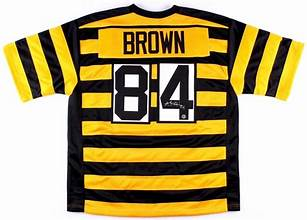

This jersey comes from one of the quickest risers to greatness in NFL history. Antonio Brown is remembered as one of Pittsburgh's greatest wide receivers of all time!
Condition
- Great condition, no signs of wear
- Authentic, smudge-free signature
- Looks brand new, great decorative framed piece
Details
| Year | 2012 |
|---|---|
| Brand | Nike |
| Price | $300 |
Shipping is free and can be shipped and delivered anywhere!